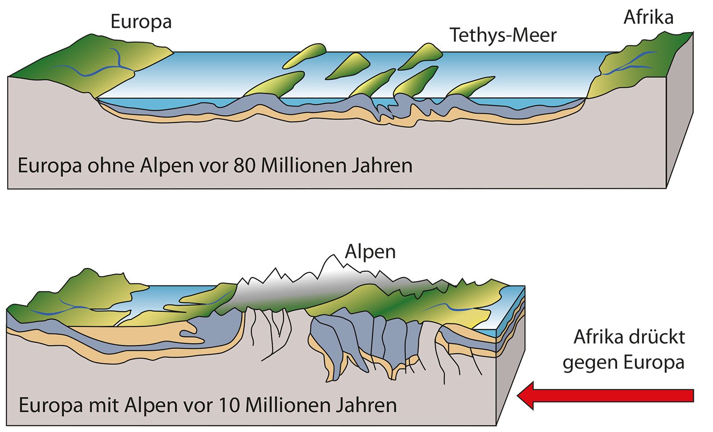

Entstehung der Alpen
Vor rund 65 Millionen Jahren kollidierten die afrikanische und die eurasische Kontinentalplatte. Diese gewaltige Kraft hob Gesteinsschichten, faltete Sedimente und schuf die hohen Gipfel, die wir heute als Alpen kennen.
- Gebildet durch Kollision und Subduktion der Erdplatten
- Lange Faltungs-, Hebungs- und Erosionsphasen
- Ursprung der Alpenlandschaft in der Erdgeschichte